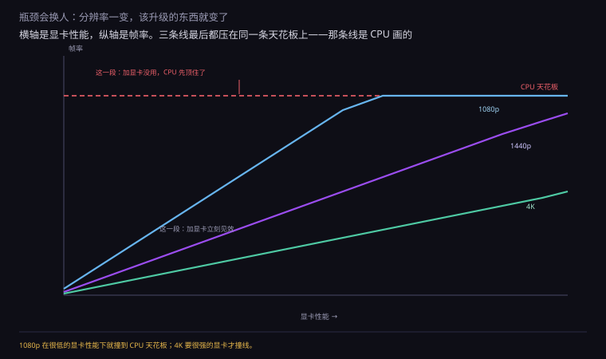
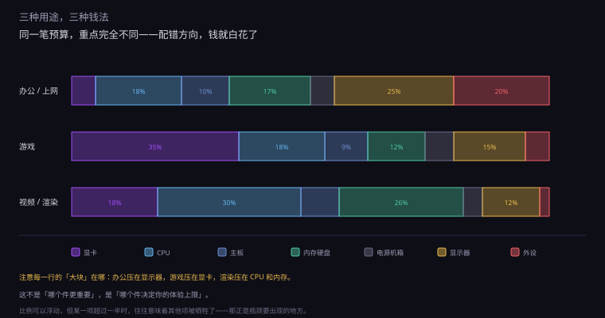
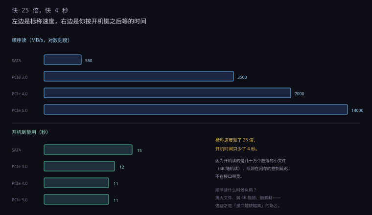
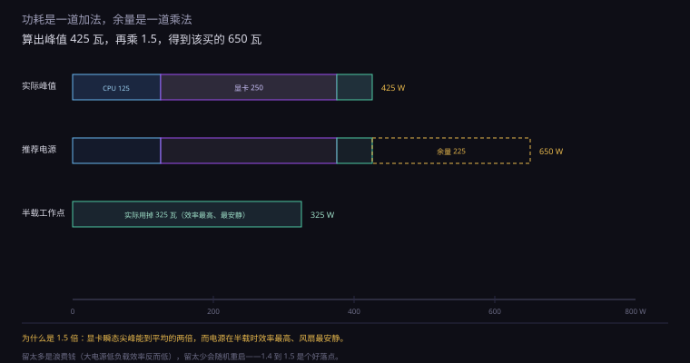
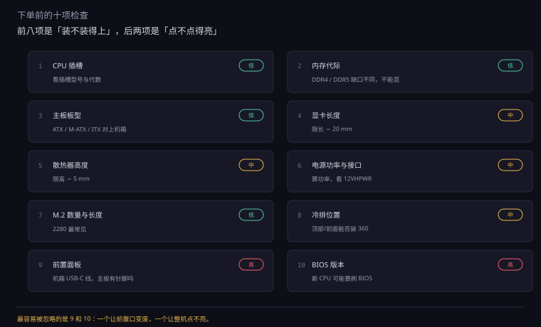
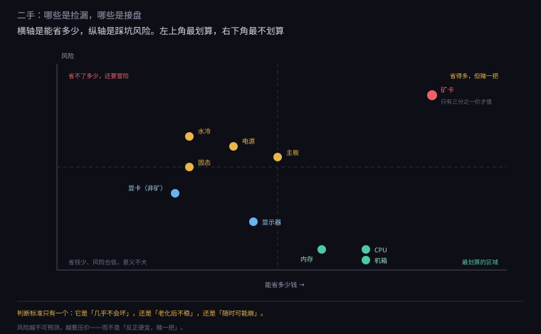

约 1.0 万字 · 6 张图 · 读完你能算清一台机器该花多少钱在哪、 为什么有些件插不上、以及二手和矿卡到底能不能碰
先看一个很多人都遇过的场景：花大价钱换了显卡，游戏帧数却没怎么涨。
原因通常是另一个件先顶住了。游戏要跑起来， 每一帧都要走完一条流水线：CPU 算逻辑、发绘制命令， GPU 收命令、画像素，内存供数据，硬盘供资源。 这条线上任何一个环节不够，整条线就卡在那儿。
这就是「瓶颈」——不是平均分配，是最慢的那一环决定整体速度。
但瓶颈是会移动的。同一个配置，在 1080p 下可能是 CPU 瓶颈， 换到 4K 就变成 GPU 瓶颈。因为分辨率越高，GPU 要画的像素越多， 而 CPU 发的命令数量几乎不变。

第一，先定分辨率，再定显卡，最后配 CPU。 因为分辨率决定了 GPU 的工作量，GPU 的档次决定了 CPU 需要多快才不拖后腿。 顺序反了，就会出现「CPU 过剩、显卡不足」这种最常见的浪费。
第二，把预算集中在「你每天都在感知」的件上。 显示器、键盘、鼠标、音箱——这些东西你每一秒都在用； 而 CPU 跑分高 10%，你一年也感觉不到几次。 很多配置单把 80% 的钱砸在机箱里，显示器却用着十年前的 1080p 60Hz。
因为三个信息不对称。
第一，参数不等于性能。 同样是「8 核 16 线程」，一颗卖八百，一颗卖三千。差别在架构、缓存、频率、 内存控制器——这些都不写在名字里。只看核心数买 CPU，等于只看排量买汽车。
第二，评测不等于你的用法。 评测跑的是「干净系统 + 固定场景」，你用的是「开了三十个标签 + 后台在下载 + 语音软件在跑」。 评测里 200 帧的配置，在你机器上可能只有 120 帧，而且卡顿更多。
第三，瓶颈会转移。 你升级了显卡，CPU 变成瓶颈；升级了 CPU，内存又不够； 加内存，发现主板只有两条槽。每次升级都会暴露下一个短板。 所以「一次配到位」比「逐步升级」省钱，但前提是你知道自己在配什么。
这一节能做的，是把「怎么判断」讲清楚，而不是给一张配置单。 配置单三个月就过时，判断方法能用五年。
这三件事定了，后面的选择基本是被推出来的。定不下来，就会陷入「加钱上好一点的」的循环。
| 用途 | 吃什么 | 钱该花在 | 可以省 |
|---|---|---|---|
| 办公 / 上网 | 单核、内存容量 | 显示器、SSD | 显卡（核显够） |
| 游戏 | 显卡 + 单核 | 显卡、显示器刷新率 | 核心数、硬盘速度 |
| 视频 / 3D 渲染 | 多核 + 内存带宽 | CPU 核心数、内存容量 | 显卡（除非用 GPU 渲染） |
| 本地跑大模型 | 显存容量 + 带宽 | 显卡显存 | CPU、硬盘 |
这张表最重要的一行是最后一行。很多人以为「跑 AI 要算力」， 其实本地推理首先卡的是显存容量—— 模型装不进显存，就得往内存里放，速度掉十倍。 所以「跑得动」和「跑得快」是两个问题，先解决装不装得下。
一个粗略但好用的分配：主机 60%、显示器 25%、外设 15%。
主机里再分：显卡 40%、CPU 20%、主板 12%、内存 10%、硬盘 10%、电源 5%、机箱 3%。
这个比例不是铁律，但它能防住两种最常见的错： 一是显卡占比过高（CPU 拖后腿），二是外设给得太少（好机器配烂屏）。
同样的预算增幅，投在不同件上，回报差别可能十倍。这是个很实际的排序：
| 加钱的件 | 典型回报 | 什么时候值 |
|---|---|---|
| 机械硬盘 → 固态 | 「像换了台电脑」 | 任何情况都值 |
| 8G → 16G 内存 | 从卡顿到流畅 | 任何情况都值 |
| 60Hz → 144Hz 屏 | 「回不去了」 | 游戏、日常滚动都值 |
| 单通道 → 双通道 | 游戏 +10~30% | 核显平台尤其明显 |
| 显卡升一档 | 帧数 +30% | GPU 是瓶颈时 |
| CPU 升一档 | 帧数 +5% | 只在 CPU 是瓶颈时 |
| PCIe 4.0 → 5.0 | 日常 0% | 只有大文件搬运 |
| 机箱加灯 | 0%，还可能更热 | 纯审美 |
这张表最值得看的是最后两行。越靠下的项，越接近「花钱买心理安慰」。 而越靠上的项，往往是「几百块换一个数量级的体验」。 预算紧的时候，先把上面几行做掉，再考虑下面。

因为它直接换算成「GPU 每帧要画多少像素」：
| 分辨率 | 像素数 | 相对 1080p | 显卡档位 |
|---|---|---|---|
| 1080p（1920×1080） | 207 万 | 1.0× | 入门到中端 |
| 1440p（2560×1440） | 369 万 | 1.78× | 中端到高端 |
| 4K（3840×2160） | 829 万 | 4.0× | 高端 |
4K 的像素是 1080p 的四倍。这意味着同一块显卡在 4K 下的帧率大约只有 1080p 的四分之一（如果完全受限于像素填充）。
反过来说：如果你只玩 1080p，把预算堆到顶级显卡上，收益会小得可怜—— 因为 CPU 先顶住了，显卡再快也只能等着。
CPU 的三个指标，对应三类完全不同的活。
单核性能决定「一件事做得多快」。游戏的主线程、日常操作的响应、 大部分软件的启动速度，都吃这个。 所以「游戏 CPU」拼的从来不是核心数，是单核和缓存。
多核性能决定「很多事同时做多快」。视频导出、3D 渲染、编译代码， 能把任务切成很多份并行跑，核心越多越快。 但这些软件通常只在你「按下导出」那几分钟用到全部核心。
缓存是这两者之外的第三个变量。游戏特别吃缓存—— 因为游戏的逻辑是「大量随机访问的小数据」，缓存命中率直接影响帧率的稳定性。 这就是为什么有些 CPU 核心数不多、频率也不高，游戏却特别强： 它堆了一大块缓存。
| 场景 | 最重要的是 | 次重要 | 不太重要 |
|---|---|---|---|
| 3A 游戏 | 单核 + 缓存 | 内存延迟 | 核心数（8 核够） |
| 电竞（高帧率） | 单核 + 缓存 | 内存频率 | 显卡（1080p 下） |
| 视频导出 | 多核 | 内存带宽 | 缓存 |
| 编译代码 | 多核 | 单核 | 显卡 |
| 日常办公 | 单核 | 内存容量 | 核心数 |
还要注意一个陷阱：「核心多」不等于「快」。 如果软件只能用一个核，16 核和 6 核跑出来一样快。 买 CPU 之前，先想清楚你常用的软件能不能吃满多核。
近几年的 CPU 开始混装两种核心：大核（性能核）负责重活， 小核（能效核）负责后台杂活。一个 8 大核 + 8 小核的 CPU， 在多任务里表现得像 16 核，但重活只用那 8 个大核。
这个设计的出发点是功耗和面积：小核只占大核四分之一的面积， 却能干一半的活。所以同样的芯片面积，能塞进更多核心。 跑分（多核）很好看，但单核性能还是看大核。
对配机的影响很具体：如果你的软件只用一两个核（大部分游戏）， 小核帮不上忙，甚至可能因为调度问题拖慢一点。 如果跑渲染、编译，小核就能实打实地加 throughput。 所以「核心数」这个指标，在有大小核之后变得更不可比了。
CPU 包装上写着「TDP 65W」。这个数不是「它最多吃 65 瓦」， 而是「它需要一个能散掉 65 瓦的散热器」。
实际功耗可以远超 TDP。一颗标称 65 瓦的 CPU， 在「功耗墙」放开的主板上能冲到 150 瓦甚至更高，持续几十秒。 这叫「睿频功耗」，厂商通常写在括号里，字很小。
这对配机有两个影响：
顺带说一个反直觉的现象：同一颗 CPU，在好主板上的跑分比在差主板上高。 不是因为主板「提升性能」，是因为好主板能让它持续跑在高频， 而差主板几分钟后就撑不住了。
主板是最容易被「加钱」的地方，也是最容易被忽视的地方。 它不决定性能，但它决定你能不能插上、能不能跑满、以后能不能升。
同一代 CPU 配不同芯片组，差别不在速度，在扩展能力： 能超频吗、有几个 M.2、几个 USB、能不能拆分 PCIe 通道。
| 档位 | 典型代表 | 给谁 | 砍掉了什么 |
|---|---|---|---|
| 入门 | Intel H 系列 / AMD A 系列 | 办公、不折腾 | 超频、部分 M.2、部分 USB |
| 主流 | Intel B 系列 / AMD B 系列 | 大多数装机 | CPU 超频（Intel）、通道拆分 |
| 高端 | Intel Z 系列 / AMD X 系列 | 超频、多卡、多硬盘 | 基本不砍，但贵 |
大多数人装 B 系列就够。真正需要 Z/X 的场合只有三种：超频、要多条 PCIe 拆分、要插很多块硬盘。
第 0 章算过：CPU 旁边的 VRM 要把 12 伏降到 1.2 伏，供几百安培。 主板的供电相数和器件质量，决定了它能不能持续供这么多电。
便宜的入门板配高端 CPU，会出现一种很奇怪的现象： 刚开机跑分正常，跑十分钟后频率掉下来。 因为 VRM 过热，触发了保护，主板主动降频。 这不是 CPU 不行，是主板喂不动。
判断方法很土但有效：看 CPU 插槽左边那一块有没有厚实的散热片。 有，说明厂家认为它需要散热；没有，说明它本来就没打算供大电流。
这部分最容易被忽略，但两年后最容易后悔：
| 板型 | 尺寸 | 插槽 | 适合 |
|---|---|---|---|
| E-ATX | 305×330 mm | 4 内存 + 多条 PCIe | 多卡、多硬盘 |
| ATX | 305×244 mm | 4 内存 + 3~4 条 PCIe | 标准装机 |
| M-ATX | 244×244 mm | 4 内存 + 2 条 PCIe | 小机箱、够用 |
| ITX | 170×170 mm | 2 内存 + 1 条 PCIe | 极小机箱 |
M-ATX 是性价比最高的选择：比 ATX 便宜，但该有的都有， 只是少了 PCIe 插槽。而现在绝大多数人只插一张显卡，多出来的插槽本来也是空着。
ITX 要慎选。它省空间，但代价很具体： 只有两条内存槽（以后加内存要全换）、 只有一个 PCIe（插了显卡就没别的）、 散热空间小（CPU 散热器限高常常只有 60 毫米）、 电源要用 SFX（更贵、选择少）。 ITX 是「用钱和折腾换体积」，不是「省钱方案」。
内存有四个参数，重要程度依次下降：容量 > 通道数 > 频率 > 时序。
内存不足时，系统会把硬盘当内存用（交换文件 / 页面文件）。 硬盘比内存慢几百倍，于是整机卡成幻灯片。 这种卡是「量变到质变」，不是「慢一点」，是「完全不能用」。
| 容量 | 够干什么 | 什么时候不够 |
|---|---|---|
| 8 GB | 纯办公、单一浏览器标签 | 开十个标签就开始卡 |
| 16 GB | 日常 + 轻度游戏 | 游戏 + 浏览器 + 语音同时开 |
| 32 GB | 主流舒适区 | 大型工程、虚拟机、4K 剪辑 |
| 64 GB 以上 | 专业渲染、多开虚拟机 | 基本不会不够 |
一个容易忽略的点：浏览器是内存大户。 每个标签页都是独立的进程，一个视频网站能吃掉几百兆。 「我只上网，16G 够吧」——开二十个标签试试。
内存控制器和内存之间是一条「总线」。插一根，是单通道； 插两根（插在正确的位置），是双通道，带宽翻倍。
对 CPU 来说，这意味着取数据的速度翻倍。 游戏、渲染、压缩这些吃内存带宽的活，双通道能快 10% 到 30%。 而「一根 32G」和「两根 16G」价格差不多，性能差一截——这是最容易踩的坑。
插法也有讲究：四条插槽的板子，通常要插第 2 和第 4 条（从 CPU 那边数）。 插错了（比如 1 和 2）就还是单通道。主板说明书上那张小图，就是干这个用的。
内存广告上写着「6000 MHz CL30」。这两个数要一起看， 换算成实际延迟才有意义：
延迟（纳秒）≈ 时序 ÷ 频率 × 2000
DDR5-6000 CL30：30 ÷ 6000 × 2000 = 10 ns。
DDR5-5600 CL46：46 ÷ 5600 × 2000 = 16.4 ns。
DDR4-3200 CL16：16 ÷ 3200 × 2000 = 10 ns。
看出来了吧：频率高的不一定延迟低。 一根标称 6000 但时序 40 的内存，实际延迟可能比 5600 CL30 还差。 买内存要看「频率 ÷ 时序」这个比值，越大越好。
内存条上焊的那几颗黑色芯片，才是决定性能的东西。 同样标称 6000 CL30，用不同厂家的颗粒，超频潜力和稳定性差很多。
大厂会把颗粒筛过：好的做高频条，一般的做低频条，差的做普条。 而有些「杂牌高频条」是用一般颗粒硬超上去的—— 标称能跑，但发热大、不稳定，换一台机器就可能点不亮。
判断方法：看品牌和型号后缀，再看价格。 同规格里明显便宜一截的，大概率是「筛下来的颗粒」。 内存这东西，便宜一百块的代价可能是半年后随机蓝屏。
买了一条标称 6000 的内存，插上开机，系统里显示 4800。这不是坏了。
因为内存的「标称频率」是超频档位，不是默认档位。 默认按 JEDEC 标准跑（DDR5 是 4800），要跑到 6000， 得在 BIOS 里打开一个开关——Intel 平台叫 XMP，AMD 平台叫 EXPO。
这个开关做的事，是让主板读内存条里存的一组「预设参数」： 频率、时序、电压。不打开，内存就老老实实跑默认值，白花钱。
固态硬盘的标称速度，这几年从 550 MB/s 涨到了 14000 MB/s，涨了 25 倍。 但很多人换了新硬盘，感觉「好像也没快多少」。
这不是错觉，是因为日常操作根本用不到顺序读写。
| 接口 | 顺序读 | 4K 随机读 | 实际体验 |
|---|---|---|---|
| SATA 固态 | 550 MB/s | 约 4 万 IOPS | 开机 15 秒 |
| PCIe 3.0 ×4 | 3500 MB/s | 约 40 万 IOPS | 开机 12 秒 |
| PCIe 4.0 ×4 | 7000 MB/s | 约 60 万 IOPS | 开机 11 秒 |
| PCIe 5.0 ×4 | 14000 MB/s | 约 80 万 IOPS | 开机 11 秒 |
看清楚这张表的最后两列：顺序读涨了 25 倍，开机时间只从 15 秒变成 11 秒。
因为开机、开软件、加载游戏，读的都是大量散落的小文件—— 这叫随机读。随机读的性能瓶颈不在接口带宽，在闪存的控制延迟。 接口再快，一次只能读 4KB，也快不到哪去。
那顺序读写什么时候有用？搬大文件的时候。 拷一个 50GB 的游戏，PCIe 4.0 比 SATA 快好几倍。 所以「剪 4K 视频」和「天天拷素材」的人值得买快的，纯玩游戏的人感知很小。

闪存颗粒按每个单元存几位分：SLC 存 1 位、MLC 2 位、TLC 3 位、QLC 4 位。 存得越多越便宜，但越慢、越不耐写。
| 颗粒 | 每单元 | 擦写寿命 | 缓外速度 | 现在用在 |
|---|---|---|---|---|
| SLC | 1 位 | 10 万次 | 很快 | 企业级、缓存 |
| MLC | 2 位 | 3000–1 万次 | 快 | 基本停产 |
| TLC | 3 位 | 1000–3000 次 | 500–1500 MB/s | 主流 |
| QLC | 4 位 | 300–1000 次 | 80–300 MB/s | 低价大容量 |
「缓外速度」这一列是关键。固态硬盘都有一段模拟 SLC 缓存： 写入先落到缓存里，速度飞快；缓存写满了，才真正写进 TLC/QLC， 速度掉到「缓外速度」。
所以一块 QLC 硬盘的体验曲线是：前 50GB 飞快，之后掉到机械硬盘的水平。 拷一个大游戏进去，前半段 2000 MB/s，后半段 100 MB/s——这就是「掉速」。
有，但只剩下一个用途：存冷数据。
机械硬盘的速度是 150 到 250 MB/s，随机读只有几百 IOPS—— 比固态慢几百倍。装系统、装游戏、开软件，它都会让你回到「转圈」的年代。
但它的单位容量价格是固态的五分之一到十分之一。 存电影、存照片、存备份、存下载的素材，这些「写一次、读很少」的数据， 放机械盘完全够用。 所以合理的组合是：一块固态装系统和常用软件，一块大容量机械存仓库。
买机械盘只有一个参数要看：是不是叠瓦（SMR）。 叠瓦盘的写入会「掉速」到几十 MB/s，因为磁道重叠，改写要先读后写。 看型号后缀或者查资料，避开叠瓦——这是唯一会明显影响体验的点。
显卡有两个数最容易被误解：显存容量和位宽。
「12GB 显存」听起来比「8GB」好，但如果前者是 96 位宽、后者是 256 位宽， 实际带宽可能差三倍。
算法：带宽 = 位宽 ÷ 8 × 显存速率
128 位 × 18 Gbps = 288 GB/s
192 位 × 21 Gbps = 504 GB/s
256 位 × 22.4 Gbps = 717 GB/s
带宽决定「GPU 每秒能搬多少数据进来」。现代游戏里， 纹理、光照、几何数据都要反复读写显存， 带宽不够，核心再强也只能干等——这就是「小马拉大车」的反面，「大马没草吃」。
显存不够时的表现很暴力：不是「慢一点」，是帧数突然掉一半、贴图变糊。 因为系统要把装不下的纹理挪到内存里，每次用再传回来。
| 分辨率 | 2026 年建议 | 不够会怎样 |
|---|---|---|
| 1080p | 8 GB | 开高材质就爆 |
| 1440p | 12 GB | 光追 + 高材质会爆 |
| 4K | 16 GB 以上 | 新游戏高画质经常爆 |
| 本地跑模型 | 越多越好 | 装不下就换 CPU，慢十倍 |
注意最后一行和游戏的逻辑完全不同：游戏是「不够就卡」，模型是「不够就跑不了」。 一个 70 亿参数的模型，4 位量化后大约要 4GB 显存， 加上上下文和中间结果，8GB 勉强、12GB 舒服。 想跑更大的模型，显存容量比算力重要得多。
光追（光线追踪）是真的在算光线路径，画面更真实， 代价是性能掉一半甚至更多。 它值不值，取决于你更在意「画面真实」还是「帧数流畅」。 而且光追对显卡的要求是跨档的——开了光追，同一块卡可能要降一档画质才能跑。
超分（DLSS / FSR / XeSS）是另一回事： 它让显卡先渲染一个低分辨率的画面，再用算法放大到目标分辨率。 结果是「帧数大涨，画质略有损失」。
这两件事经常被放在一起宣传，但它们的方向完全相反： 光追是「用性能换画质」，超分是「用画质换性能」。 实际用法是「开光追 + 开超分」，把掉下去的性能补回来一部分。
| 技术 | 干什么 | 代价 | 什么时候用 |
|---|---|---|---|
| 光追 | 真实的光影反射 | 帧数 −40~60% | 显卡有余量时 |
| DLSS / FSR | 低分辨率渲染再放大 | 细节略糊 | 帧数不够时 |
| 帧生成 | 插入 AI 生成的中间帧 | 延迟增加 | 帧数已够 40+ 时 |
注意最后一行：「帧生成」不是免费的。 它靠插帧让画面看起来更流畅，但操作的响应还是原来的速度。 所以「开了帧生成 120 帧」和「原生 120 帧」是两种手感，前者会「黏」。
电源是最不该省钱、也最容易算错的一个件。
一个粗略但够用的公式：
整机峰值 ≈ CPU 功耗 + 显卡功耗 + 50 瓦（主板、内存、硬盘、风扇）
举例：CPU 125 瓦 + 显卡 250 瓦 + 50 瓦 = 425 瓦。
然后按 1.4 到 1.5 倍留余量：425 × 1.5 ≈ 640 瓦，选 650 瓦。
为什么要留这么多？两个原因：一是显卡的瞬态尖峰能到平均的两倍 （第 0 章讲过），二是电源在半载时效率最高、风扇最安静。

电源铭牌上有一堆数字，只需要看12V 那一路能出多少安培。 乘 12 就是它能给核心硬件的功率。
一个 650 瓦的电源，12V 应该能出 50 安以上（600 瓦）。 如果 12V 只有 30 安（360 瓦），剩下 290 瓦压在 3.3V 和 5V 上—— 那是十几年前的设计，带不动现代显卡。
模组电源的线可以拔下来，只插需要的那几根，机箱里更清爽。 但这里有一个真实的坑：不同品牌的模组线，接口定义不一样。
同样是 8 针接口，A 品牌的 +12V 在第 3 针，B 品牌可能在第 5 针。 把 A 的线插到 B 的电源上，轻则不亮，重则烧硬件。
定制线（那种编织的、颜色好看的）风险更高： 线径不够、端子压接不牢、没有 UL 认证。 高功率显卡用劣质定制线，接头会发热、软化，最后烧穿—— 这和 12VHPWR 烧接口是同一类问题：不是功率太高，是接触电阻太大。
前面所有件都能看参数选，机箱不行——它只有尺寸， 而尺寸不合就是装不进去，没有余地。
| 尺寸 | 谁的尺寸 | 谁的容量 | 差一点会怎样 |
|---|---|---|---|
| 显卡长度 | 显卡（250–360 mm） | 机箱限长 | 装不进去，或者挡住硬盘架 |
| 散热器高度 | 风冷（150–175 mm） | 机箱限高 | 侧板盖不上 |
| 冷排尺寸 | 水冷（240/280/360） | 机箱支持位 | 只能用扎带绑在外面 |
这三个数在商品页上都有，但「机箱限长」经常写的是「最大支持」， 而实际会跟前置风扇、硬盘架打架。 稳妥的做法是留 20 毫米余量，并且去看别人装同款的实际照片。
第 0 章讲过原则：正压 + 滤网。 具体到装机，就是「前面板进风风扇数量 ≥ 后部 + 顶部出风」。
还有一个常被忽略的点：进风口不能被挡住。 前面板如果是整块玻璃或者密网，进风面积不够，风扇再多也是白转。 「网孔面板」比「玻璃面板」凉快，这是物理，不是审美。
这是个被过度讨论的问题。两者都能把 CPU 压住， 差别在「热从哪里走、坏起来什么后果」。
| 风冷 | 一体式水冷 | |
|---|---|---|
| 原理 | 热管把热导到鳍片，风扇吹走 | 水泵把水送到冷排，风扇吹走 |
| 寿命 | 十年以上，风扇可换 | 3–5 年，水泵会衰减 |
| 故障后果 | 温度升高，降频 | 泵停转 → 几分钟过热关机 |
| 噪音 | 中低频，厚 | 高频水泵声 + 风噪 |
| 占空间 | 高（160 mm 以上） | 冷排占机箱位 |
| 价格 | 便宜 | 贵一倍以上 |
关键差别是「坏起来会怎样」。 风冷的风扇停了，温度慢慢升，系统降频，你有时间发现。 水冷的泵停了，热量根本送不到冷排，CPU 温度几十秒内冲到 100 度以上， 直接关机保护——如果你正在导出视频，那就是白干。
所以：追求省心选风冷，追求极限散热和颜值选水冷。 而且水冷要接受「三五年换一次」的成本。 「水冷比风冷高级」是个营销说法，不是技术结论。
看三个地方，比看参数准。
一、前面板是什么。整块钢化玻璃 = 进风几乎为零； 细密网孔 = 好；大面积开孔 + 滤网 = 最好。 「玻璃前面板 + 侧面开小缝」是最典型的闷罐设计，好看但热。
二、进风口到风扇之间有没有遮挡。 有些机箱前面板后面还有一层硬盘架，风要穿过铁皮才能到风扇。 这种设计风扇再多也没用。
三、顶部能不能出风。热空气往上走，顶部封死就只能靠后部一个风扇排。 顶部有网孔且能装风扇，是「不闷」的基本条件。
下单前把这十项过一遍，能避免九成的「装不上」和「点不亮」。
| # | 检查什么 | 怎么检查 | 翻车率 |
|---|---|---|---|
| 1 | CPU 插槽与主板 | 看插槽型号（LGA/AM）和代数 | 低 |
| 2 | 内存代际 | DDR4 和 DDR5 不能混插，缺口位置不同 | 低 |
| 3 | 主板板型与机箱 | ATX / M-ATX / ITX 要对上 | 低 |
| 4 | 显卡长度 | 显卡长度 ≤ 机箱限长 − 20 mm | 中 |
| 5 | 散热器高度 | 散热器高度 ≤ 机箱限高 − 5 mm | 中 |
| 6 | 电源功率与接口 | 算功率，看有没有 12VHPWR / 足够的 8 针 | 中 |
| 7 | M.2 数量与长度 | 2280 最常见，注意有的槽只支持 2242 | 低 |
| 8 | 冷排位置 | 顶部/前面能不能装下 360 | 中 |
| 9 | 前置面板接口 | 机箱的 USB-C 线，主板有没有对应针脚 | 高 |
| 10 | BIOS 版本 | 新 CPU 配新主板，可能要刷 BIOS | 高 |
最后两项「翻车率」最高，而且最容易被忽略。
第 9 项：机箱前面板有一个 Type-C 口，线是一根扁扁的「前置 Type-C 针脚」。 如果主板没有这个针脚，那个口就永远是死的，而且线没地方插。
第 10 项：新 CPU 上市后，主板的库存可能还是旧 BIOS。 插上去点不亮，屏幕上什么都不显示。这时候只能借一颗旧 CPU 刷 BIOS， 或者用「无 CPU 刷 BIOS」功能。
零件都到齐了，别急着往机箱里塞。正确的顺序是「先在机箱外点亮，再装进去」。
这个顺序的好处是：点不亮的时候，不用拆机箱。 少装一次少拆一次，能省下几个小时。
还有几个容易忘的细节：

二手市场的核心问题不是「便宜没好货」，是信息不对称： 卖家知道这块卡经历过什么，你不知道。
但不同零件的「抗造程度」差别极大，可以按风险分成四档。

CPU 是最耐用的零件。没有机械部件，正常使用十年也不会坏。 二手 CPU 唯一的风险是「针脚弯了」和「被超频虐待过」—— 前者能看出来，后者基本不影响寿命。所以二手 CPU 是性价比最高的选择。
内存更简单：很多品牌终身保，坏了直接换。 二手内存只要不是假条，基本没有风险。
机箱没有电子元件，只要没变形、螺丝齐，就是新的。
主板的寿命取决于电容。电解电容会老化，五年以上的板子， 供电可能已经不稳。而且老主板没有保修，坏了就是废品。
电源同理，而且更危险——电容老化会导致输出不稳， 严重时会带走整台机器。二手电源只建议买「三年内、有发票」的。
水冷的寿命取决于水泵。泵一旦停转，CPU 几分钟就过热关机。 而水泵的轴承磨损是看不出来的，只能靠听声音和看温度。
「矿卡」是长时间满负荷跑计算的显卡。它的损耗和游戏卡完全不同： 不是「用得多」，是「连续几个月 7×24 满转、风扇满速、显存高温」。
常见的识别方法（从容易到难）：
结论：矿卡不是不能买，是「要按它的风险定价」。 如果价格只有新卡的三分之一，而且你愿意承担「一年内可能花屏」的风险， 那它是个合理的选择。但如果是「九成新、只用了半年」的价格，那就不值。
| 零件 | 建议 | 理由 |
|---|---|---|
| CPU | 放心买 | 无机械件，十年不坏；只查针脚 |
| 内存 | 放心买 | 多数终身保；只防假条 |
| 机箱 | 放心买 | 纯结构件，看变形和螺丝 |
| 显示器 | 可以买 | 当面看坏点、漏光、烧屏 |
| 固态硬盘 | 谨慎 | 看写入量和健康度，磨损不可逆 |
| 主板 | 谨慎 | 电容老化，五年以上风险高 |
| 电源 | 谨慎 | 老化会带走整机，只买三年内的 |
| 水冷 | 谨慎 | 水泵寿命看不到 |
| 显卡（非矿） | 可以买 | 看使用痕迹、烤机温度 |
| 显卡（矿） | 按风险定价 | 三分之一价才值，否则不碰 |
这张表的排序有一个统一的标准：「坏起来是慢慢坏，还是一下子坏」。 CPU、内存、机箱是「几乎不会坏」；主板、电源是「老化后不稳定」； 显卡矿卡是「随时可能花屏」。 风险越集中、越不可预测的，越要压价。
如果是当面交易，按这个顺序走，二十分钟能看出八成问题。
如果对方不愿意让你测，那本身就是答案。
不给具体型号（会过时），给三个档位的「比例关系」，可以套到任何一代硬件上。
| 档位 | 目标 | 钱压在哪 | 哪里可以省 |
|---|---|---|---|
| 入门（办公 / 轻度） | 1080p 60 帧、流畅办公 | SSD、内存 16G、显示器 | 显卡（核显）、CPU（4–6 核） |
| 主流（游戏） | 1440p 高刷 | 显卡、144Hz 屏、32G 内存 | CPU（6–8 核够）、硬盘（4.0 够） |
| 高端（生产力 + 游戏） | 4K 或重度渲染 | 显卡、多核 CPU、大内存 | 机箱、灯、外设 |
注意每一行的「哪里可以省」——省下来的不是「凑合」，是「这个档位用不到」。 入门机配 32G 内存是浪费，高端机省电源是冒险。 配平的意思，是每一分钱都花在「这一档真正需要的地方」。
把这一节压缩成六句话：
1. 因为另一个件先成了瓶颈。最常见的是 CPU 太弱（1080p 高帧率时）或内存不足，显卡再快也只能等。
2. 4K 是 1080p 的 4 倍（829 万 vs 207 万像素）。GPU 工作量涨四倍，CPU 发的命令数几乎不变，所以瓶颈从 CPU 转到 GPU。
3. 游戏看单核性能和缓存；生产力看多核数量和多核效率。
4. 刚开机正常，跑几分钟后频率掉下来（VRM 过热保护）。看 CPU 插槽左边有没有厚实的散热片。
5. 双通道带宽翻倍。四条槽的板子通常插第 2 和第 4 条（从 CPU 数）。
6. 6000 CL30 是 30÷6000×2000 = 10 ns；5600 CL46 是 16.4 ns。前者低。
7. 开机读的是大量小文件（4K 随机读），瓶颈在闪存控制延迟，不在接口带宽。
8. 128÷8×18 = 288 GB/s。
9. (125+250+50)×1.5 ≈ 640W，选 650W，并确认 12V 能出 50A 以上。
10. 二手 CPU 几乎无风险（无机械件）；二手电源有电容老化风险，可能带走整机；矿卡伤在显存，可能半年后花屏。